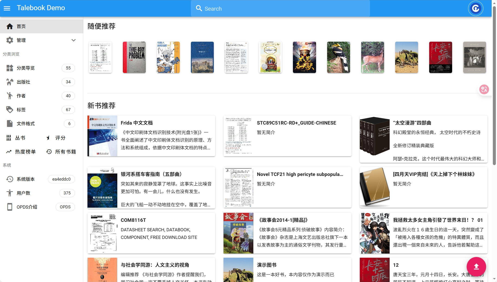
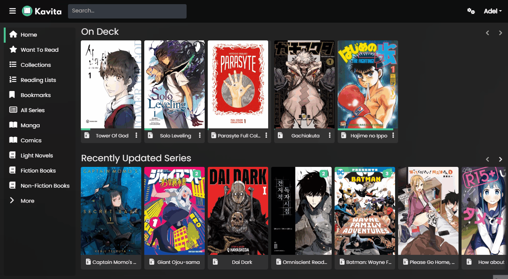
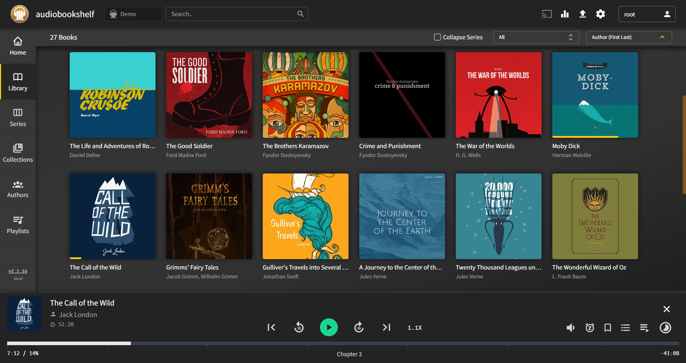
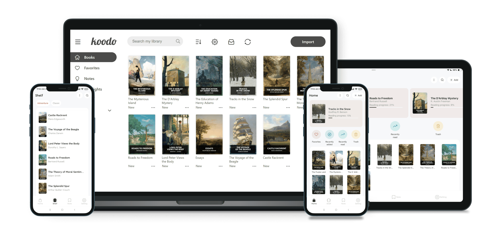
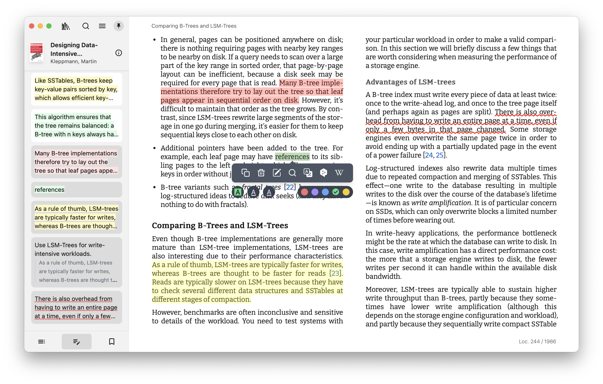
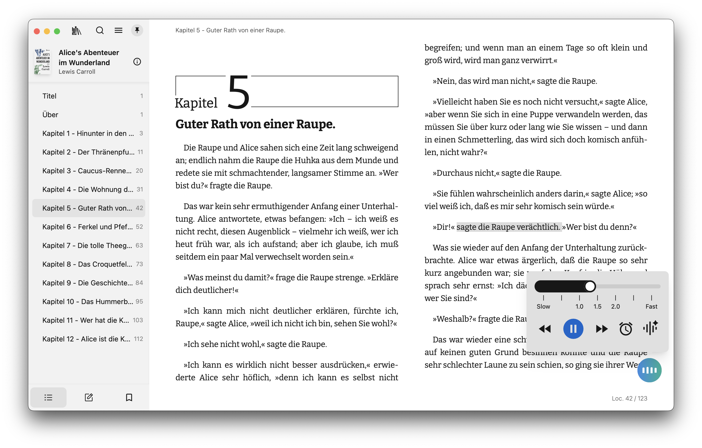

Talebook · Product Research
Talebook 产品调研与未来半年路线建议
从自托管书库、商业阅读平台与 AI 阅读工具中提炼机会，给出可执行的半年产品组合。
TL;DR
Talebook 不应直接复制 Kindle、微信读书或 Audible，也不需要重写 Calibre。未来半年最务实的方向是升级为“中文私有阅读中枢”：把入库、元数据、权限、阅读进度、批注、AI 知识提取和多端同步串起来。推荐投入配比为 50% 基础阅读体验、35% AI 阅读、10% 听书/TTS 验证、5% 开放生态。
01执行摘要
5.6k
Talebook GitHub stars
中文自托管书库已有可观基础盘。
50%
Recommended focus
优先补书架、批注、同步、导入质量。
35%
AI reading
AI 必须和全文索引、引用、笔记绑定。
6 mo
Roadmap horizon
半年内做出可传播的大版本。
Mainline
私人书库基础体验
书架、继续阅读、进度同步、批注、OPDS/KOReader/Kobo/Moke。先让用户真的持续读书。
Differentiation
AI 知识阅读
从现有 AI 元数据扩展到带来源引用的摘要、问答、划线解释和知识库导出。
Validation
听书/TTS MVP
只验证章节级 TTS、收听进度和有声书导入。中心音频分享平台暂缓。
02产品截图观察
截图不是为了复刻 UI，而是观察竞品把价值放在什么位置：书库首页、阅读器、批注、TTS、音频库、跨端能力。Talebook 需要从“管理文件”转向“完成阅读闭环”。

Talebook
中文自托管书库、Calibre 底座、Web 阅读和网络书源是现有差异。

Kavita
阅读服务器更强调集合、阅读列表、内置阅读器、主题和元数据。

Audiobookshelf
有声书不是“上传音频”而是播放、章节、进度、移动端和元数据。

Koodo Reader
阅读器端已经把云盘同步、AI、导出到知识库做成卖点。

Readest annotations
批注、高亮、笔记是从“打开书”到“沉淀知识”的关键环节。

Readest TTS
TTS 应嵌入阅读器体验，而不是作为孤立的音频导出按钮。
03开源竞品格局
自托管阅读项目的竞争重心正在从“能管理/下载书”转向“能同步阅读状态、批注和设备”。OPDS 仍是基础，但 KOReader/Kobo 同步、REST API、批注模型和全文搜索已经成为新一代项目的标配倾向。
| 产品 | Stars | 定位 | 关键启发 | Family |
|---|---|---|---|---|
| Calibre-Web | 17.8k | Calibre 书库 Web 管理 | 书架、Kobo Sync、Magic Link、LDAP/OAuth 是直接参考项。 | server |
| Kavita | 11.3k | 自托管阅读服务器 | 集合、Want to Read、批注、Kavita+ 订阅展示了完整产品化路径。 | server |
| Komga | 6.5k | 漫画/杂志/eBook 媒体服务器 | REST API、OPDS v1/v2、Kobo Sync、KOReader Sync 是设备生态重点。 | server |
| Audiobookshelf | 13.7k | 自托管有声书/播客服务器 | 音频体验需要章节、进度、移动端、元数据、转码和备份。 | audio |
| Koodo Reader | 27.7k | 跨平台电子书阅读器 | AI、网盘/WebDAV、KOReader 同步和知识库导出已成为阅读器卖点。 | reader |
| Readest | 22.8k | 现代跨平台阅读器 | Talebook 的 Moke 已借力 Readest，应优先打通后端同步。 | reader |
| KOReader | 28.1k | 电纸书阅读器 | 电纸书用户强依赖 OPDS 和同步，适配价值高。 | reader |
| BookOrbit | 1.8k | 新兴自托管阅读平台 | 三方进度/批注同步与 Readwise/Hardcover 同步说明趋势已转向阅读数据中枢。 | server |
| Stump | 2.6k | 数字书服务器 | 小团队新项目也把批注、OIDC、Kobo/KOReader 同步作为核心能力。 | server |
04商业付费产品信号
商业产品卖的不是“文件管理”，而是持续阅读的省心体验：跨设备进度、书签高亮、内容发现、离线、TTS、家庭共享、读书目标和可导出笔记。Talebook 的机会在于用自托管和中文生态切入同一个需求。
| 产品 | 模式 | 强项 | 给 Talebook 的信号 |
|---|---|---|---|
| BookFusion | $0 / $1.99+ / $4.99+ / $9.99+ | DRM-free 书库上传、跨端进度/高亮/书签、Calibre 导入、Send to Kindle、家庭分享、TTS。 | 最像 Talebook 的商业参照，证明私有书库用户愿意为同步和存储付费。 |
| Readwise Reader | $9.99/年付月均; $12.99/月付 | 文章、PDF、EPUB、RSS、newsletter、YouTube 统一阅读，高亮复习，导出 Notion/Obsidian。 | 阅读数据和知识流转本身可以成为付费价值。 |
| Audible | $8.99 / $14.95 | 有声书内容、移动播放、离线、播客、点数购买。 | 不要做内容平台；应做个人内容/TTS 的私有听书体验。 |
| 微信读书 | 无限卡/内容购买 | 中文内容、阅读统计、划线想法、书评、社交、AI Skill。 | AI 读取个人书架、笔记和统计是中文市场明确信号。 |
| 得到 | 课程/听书/电子书/AI 会员 | 听书、电子书全局播放、AI 学习助手、笔记同步。 | 知识型用户需要“读/听/问/记”一体化。 |
| Apple Books | 系统生态 + 内容销售 | 阅读目标、成就、推荐、家庭共享、跨设备。 | 读书目标和统计可作为留存增强，但不应喧宾夺主。 |
05AI 阅读与知识管理趋势
NotebookLM pattern
源文档约束 + 引用
Gemini Notebook 强调基于上传来源回答，并提供引用；音频概览、思维导图、学习指南、报告等是源材料的多种输出形态。
Readwise pattern
阅读库成为 AI 上下文
Readwise Reader/Ghostreader 把文档问答、自动摘要、自动标签、导出、API/MCP 串起来，说明“我的阅读库”是长期资产。
WeRead pattern
AI 连接阅读数据
微信读书 Skill 支持查书架、阅读统计、笔记划线、书籍搜索、详情和推荐。Talebook 可做私有版 API/Skill。
Open-source acceptance
BYOK 和可关闭是前提
自托管用户更关心隐私、成本和可控性。AI 应默认只发送片段、保留审计、支持用户自带 Key。
06Talebook 能力缺口矩阵
下表把 Talebook 放到竞品能力坐标中。结论很直接：中文元数据和 Calibre 兼容是优势；书架/批注、全文搜索、设备同步和 AI 阅读是最值得补的缺口。
| 能力 | Talebook | 开源竞品成熟度 | 商业产品成熟度 | 半年优先级 |
|---|---|---|---|---|
| Calibre 兼容 | 强 | 强 | 弱 | 保持优势 |
| 中文元数据/书源 | 强 | 弱 | 强 | 继续强化 |
| 书架/智能集合 | 中 | 强 | 强 | P0 |
| 批注/高亮/笔记 | 弱 | 强 | 强 | P0 |
| KOReader/Kobo 同步 | 弱 | 强 | 中 | P1 |
| AI 摘要/问答 | 弱 | 中 | 强 | P1 |
| 知识库导出 | 弱 | 强 | 强 | P1 |
| 有声书/TTS | 弱 | 强 | 强 | P2 验证 |
| 公开音频分享 | 无 | 弱 | 中 | 暂缓 |
07四套发展方案
Option A
私人书库基础体验
书架、阅读状态、批注、OPDS、Moke、KOReader/Kobo、导入和备份。风险低，直接提升现有用户满意度。
Option B
AI 知识阅读中枢
全文索引、摘要、带引用问答、划线解释、卡片、知识库导出、私有阅读 API/MCP。
Option C
听书与 TTS 验证
章节级 TTS、有声书导入、Web 播放器、倍速、睡眠定时、收听进度。中心分享暂缓。
Option D
开放生态与商业化
REST API、插件规范、诊断、托管/云增强/优先支持。长期重要，但不宜压过 A/B。
08六个月路线图
| 月份 | 重点 | 交付物 |
|---|---|---|
| M1 | 阅读状态、批注、设备、LLM Provider 设计 | 数据模型、API 草案、冲突策略、AI provider 抽象 |
| M2 | 书架/智能集合、继续阅读、EPUB/TXT 全文索引 | 基础阅读闭环可用 |
| M3 | Web/Moke 批注同步、AI 摘要、单书问答 | 带来源引用的 AI 阅读 MVP |
| M4 | KOReader/Kobo Sync、Magic Link、Moke 离线同步 | 跨设备连续阅读可感知 |
| M5 | 知识库导出、私有阅读 API/Skill、TTS MVP | 知识流转和听书实验可试用 |
| M6 | 稳定性、诊断、文档、路线图、商业化实验 | 可公开传播的半年大版本 |
09风险与对策
Copyright
公开书库、书源抓取和中心音频分享都有版权风险。建议默认强调个人使用，半年内不做中心音频分享，不提供公开书库发现。
AI trust
AI 回答必须带章节、位置和片段引用；没有来源就明确无法回答。摘要、问答、卡片都要可回跳原文。
Privacy
默认 BYOK、可关闭、只发送检索片段，保留请求审计和每日限额。管理员应能限制哪些用户可以使用 AI。
Data model
不要把用户批注、AI 结果、TTS 派生资产硬塞进 Calibre DB。Calibre 继续负责书籍元数据，Talebook DB 管用户态数据。
10建议立即启动的 Milestones
- Reading Core. 统一阅读状态模型、书架/智能集合、继续阅读、Web/Moke 进度同步、批注/书签基础 API。
- Search & AI Reading. EPUB/TXT 全文索引、单书摘要、带引用问答、划线解释/翻译、Markdown/Obsidian 导出。
- Device Sync. OPDS v2/认证增强、Magic Link、KOReader/Kobo progress sync MVP、Moke 离线同步。
- Listening MVP. TTS provider 抽象、章节级 TTS 队列、Web 播放器、收听进度、M4B/MP3 导入。
- Ecosystem Preview. OpenAPI 文档、Provider 插件模板、私有阅读 API/MCP/Skill 原型、安装诊断。